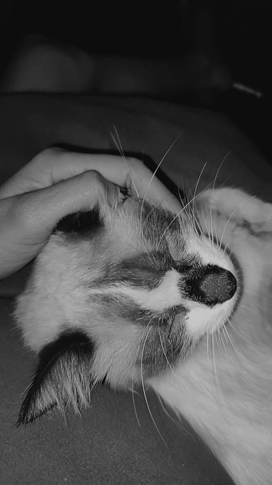
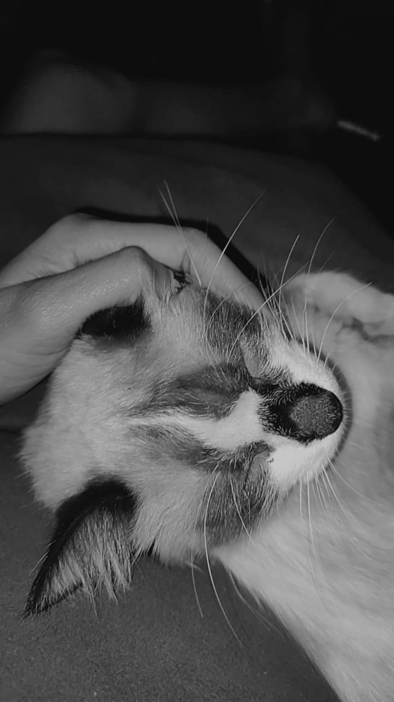

Mis gatitos
Imagenes de mis gatitos
 

Si quieres ver mas imagenes de mis gatitos,ingresa a este link
3 cosas que mis gatitos aman
- Dormir
- Jugar
- Comer
3 cosas que mis gatitos odian
- Bañarse
- Estar solitos
- Tener frio
Como fue que supe que mi gatito era hembra
En un primer momento, no sabiamos que "era" mi Zeus, dado que nos lo regalaron cuando aun estaba muy pequeño,
con el tiempo no fue muy relevante para nostros saber que era jajaja, pero la forma en la cual supimos fue hasta que
ella estuvo embarazada, pero su parto fue otra historia